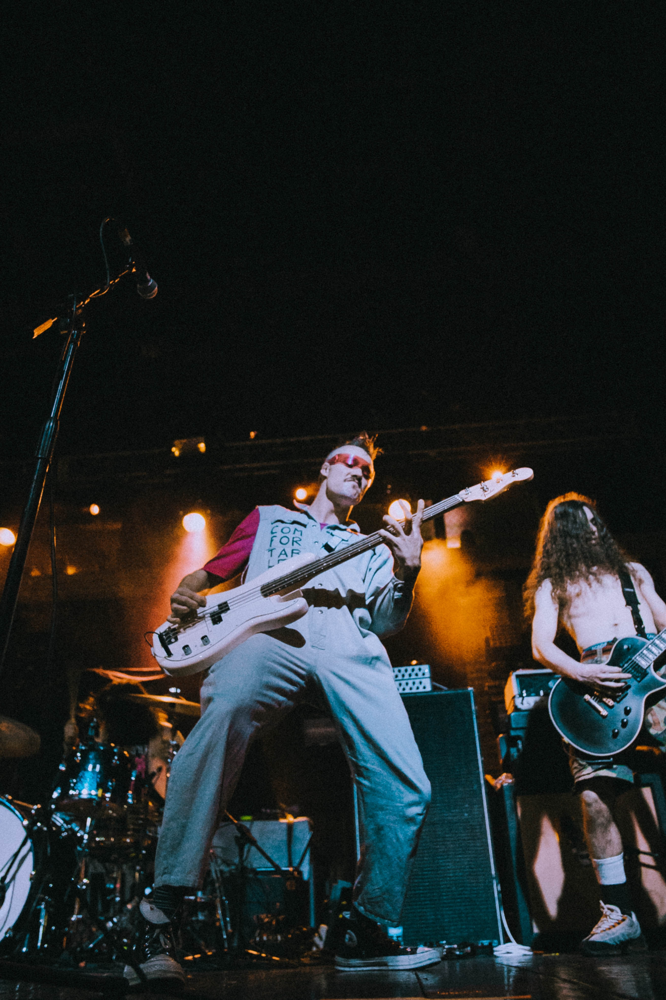
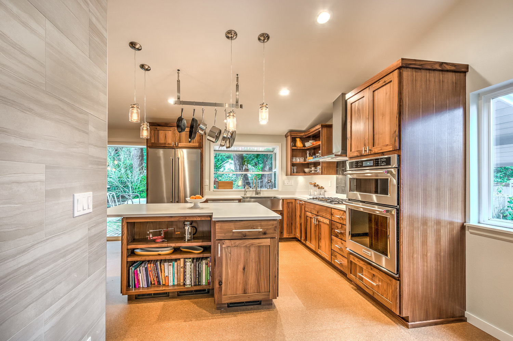

Gavin Kimberlin's Portfolio

Previous Projects:
Animal Shelter

A website designed for a an animal shelter using HTML and CSS. It has three dogs with their own columns describing the them.
Vacation
A website made for a vacation spot with three pages of six columns for different attractions and three colums for the different packages made using HTML and CSS.
Cupcake Shop

A website for a cupcake shop with three pages for each of the cupcake flavors made using HTML and CSS.
Favorite Band
A website for my favorite band with a sidebar for show dates made using HTML and CSS.
Interior Decorator
A website for an interior decorator that showed the process of a remodel on a house in columns using HTML and CSS.
Resort

A website for a resort with five different pages of information on the resort made using HTML and CSS.
Wikipedia
An attempt at a recreation of the Wikipedia home page made using HTML and CSS.